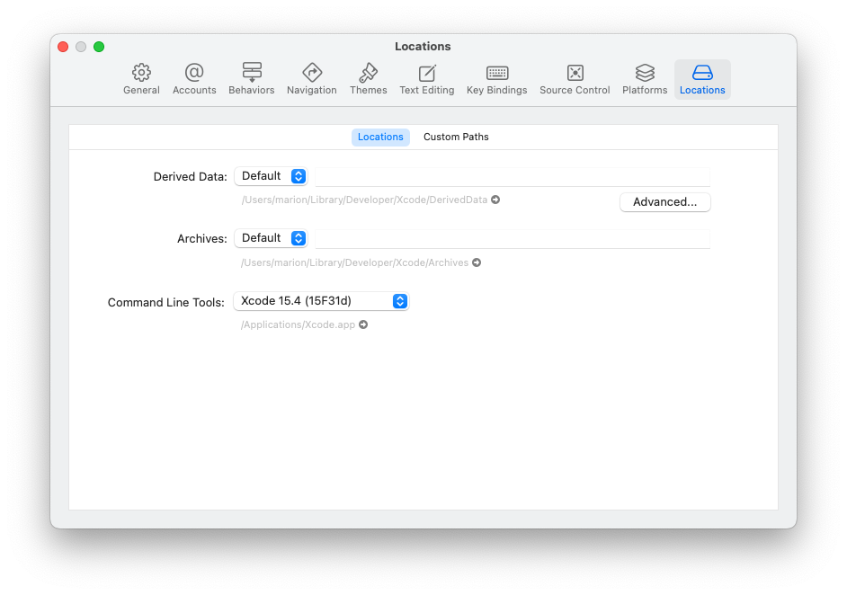

Step 9: Xcode Preferences⌁
Time Estimate
- about 10-15 minutes to install the Command Line Tools
- 5 minutes to add your Apple ID, assuming you remember your password
Summary
- Open Xcode Preferences and add your Apple ID under the Accounts tab.
- Verify that Command Line Tools has been properly installed under Xcode Preferences under the Locations tab.
FAQs
- "I still only see an account with
(personal team)beside it even though I enrolled in the paid Developer Account program...what should I do?" You should check your spam email box in case Apple sent you an email there. Make sure you've waited the 48 hours that Apple says it may take to get your account approved. If it's been 48 hours and you still don't see anything in your email, contact Apple support and ask them about the status of your enrollment. It may be held up by something on their end.
Since you've been working in order, you will now have Xcode installed on your computer from Step 8. You will also have enrolled in the Apple Developer program with a paid account, if that was your selection, in Step 6. Now we need to tell Xcode about your Developer Account. But first a few more steps.
Did your computer reboot following the Xcode installation. If not, reboot now.
Open Xcode from your Applications folder.
Command Line Tools⌁
There may be a short delay the very first time you open Xcode because it will install a package of tools. Don't close that window out, let it finish...we will need those Command Line Tools. Helpful tip: When the Command Line Tools installation is done and the pop-up window closes, check that your Command Line Tools installed correctly. Open Xcode's Preferences by clicking on the word Xcode in the top menu bar (just to the right of the Apple icon in the upper-left corner) and selecting Preferences in the drop-down menu. The keyboard shortcut to open Xcode Preferences is command-comma if that's easier for you. Then select the Locations tab of Preferences window and you'll see the dropdown menu for Command Line Tools. Make sure the Xcode version listed matches what you just installed. If it's blank, use the blue arrows to the right of the Command Line Tools row to select it.

Simulator Download⌁
Starting with Xcode 12, the simulators are no longer being downloaded automatically. You may be required to download them yourself. While still on the Xcode Preferences window, after adding command line tools using the Locations tab, click on the Components tab. It should look similar to the first figure below.
Choose the iOS operating system closest to the one on your phone and click the down arrow to install it. (If your phone has iOS 14.4, and the biggest number simulator you see is iOS 14.3, download that one. If you phone has iOS 13.3, first we recommend updating, but if you choose not to, then select iOS 13.3 from the list.)
Then scroll down to find the watchOS lines and choose the operating system on your watch (or biggest number if you don't have a watch paired) and click the down arrow to install it.
Simulator download is now initiated. You can continue with the next steps, but let download complete before trying to build.


Add Apple ID⌁
Go to the Xcode Preferences window from above, click on the Accounts tab and then press the + in the lower-left corner to add an Apple ID account.

If you want to use a free developer account, you will simply enter your Apple ID in this section and Xcode will automatically enroll your Apple ID in the free developer program. If you enrolled in the paid account already and have confirmation that your account is active, enter the Apple ID of the paid developer account. The screenshot below shows the labeling of team names based on whether from free account vs. paid account. Free teams will have (personal team) after the name.

You are now done setting up Xcode. Great job! You will not need to redo the account setup steps on any subsequent builds or updates of your Loop app. Xcode will remember these settings.
Next Step: Test Settings⌁
Now you are ready to move onto Step 10 to Test Your Settings.